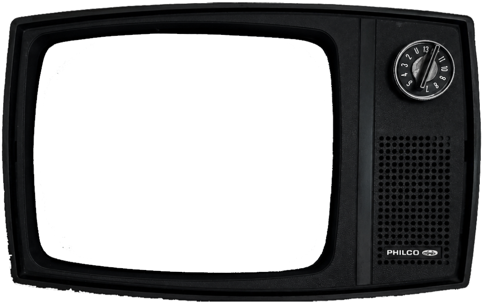

— Guy Debord
"Todo lo que antes se vivía directamente
se ha convertido en una simple representación."
G'IA
La sociedad del espectáculo ↗
["1967"]
La société du spectacle
El ensayo
La sociedad del espectáculo es un ensayo del teórico del consejo Guy Debord , publicado en 1967 por Buchet-Chastel. El libro pretende ser una crítica exhaustiva de la ideología burguesa dominante, la alienación mercantil , el fetichismo de la mercancía , el modo de producción capitalista , la sociedad
de clases y de consumo, así como de la planificación territorial bajo el capitalismo. Esta obra también propone, como solución para acabar con el capitalismo (y con esta « sociedad del espectáculo »), una revolución basada en el comunismo de consejos .
← FRAGMENTO ANTERIOR
[ N.º09 ]
SIGUIENTE FRAGMENTO →